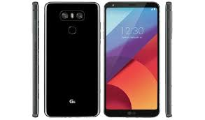

Ýþte LG G6'nýn özellikleri
IPS LCD kapasitif 5.7-inç, 1440 x 2880 piksel (ortalama 565 ppi) QHD, Gorilla Glass 3 korumalý ekran (Alway-on özelliði de mevcut)
Qualcomm Snapdragon 821 çipset
2x 2.35GHZ ve 2 x 1.6GHz olmak üzere dört çekirdekli iþlemci
Adreno 530 grafik iþlem birimi
4GB RAM
32/64GB sabit depolama alaný ( 256GB'ye kadar arttýrýlabilir)
13MP + 13MP lazer otofokuslu çift arka kamera
5MP ön kamera
Parmak izi okuyucu sensör
Google Asistan desteði
Gorilla Glass 5 destekli arka panel
Suya ve toza karþý dayanýklýlýk (IP68, 1.5 metrede 30 dakikaya kadar dayanabilmekte)
3300mAh batarya
Qualcomm Quick Charge 3.0
USB Typce-C ve 3.5mm kulaklýk giriþi
Android 7.0 Nougat iþletim sistemi
Mistik beyaz, astro siyah, buz platin olmak üzere 3 farklý renk seçeneði